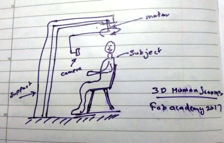

Final Project > the Concept(s)
My plan/idea for the Final project was contantly evolving from week-1 of the academy. Many ideas went through my mind, and I did some brief work on few of them before chosing my final project - WalkWorkWheel or the fabWheel by week-16.
The idea is to have a wheel inside which we could walk. This could be like a XXXXXL hamster wheel. Also there could be a table where we can place the laptop and work while walking. I also plan to put some sensor(s) and provide feedback to the walker via a companion android app.
Other Ideas considered
Following paragraphs and images depicts the various ideas considered by me during the fabacademy, before I finalized on the WWW fabwheel.
Idea-1: Equipment for Human Scanner, and 3D selfie
Idea-2: A smart mushroom growing init for small house holds.
Idea-3a: A smart space saving bed/study room kit with bunkbed and related items (My son is excited to have this)
Idea-3b: Why dont it look like a van, my son even want it to be moved :O
Idea-4: WalkWorkWheel or the fabWheel (the chosen one)
Idea-1: Equipment for Human Scanner, and 3D selfie
I initially planned to do a 3D human scanner. My plan is to make a rig that could mount a rotating camera to take multiple photos of the subject across 360-deg. Then these photos could be stictched and made into a model using a photogrammetry application. (I was not sure of the other techniques, until the 3D printing and 3D scanning week). 
The above one is my first sketch on the project as part of the first weeks task. The image depicts the rotating camera fixed on a support and the subject posing in the middle. Later I also thought to have a rotating link mechanism inspired out of selfie sticks. So a centre stand is not requred. I had some concepts on these regard, but they are not effectively utilising the tools and techniques considered at the fabacademy, so I am keeping aside this now.
Idea-2: Smart Urban household mushroom unit
This idea centered around creating a compact mushroom growing unit that could be used on small spaces. The idea was to have portabe unit which is smart enough to provide the required humid/cold enviornment for the mushrooms to grow. I had some discussion with a professor at the Kerala Agriculture University on the same. The main concerns will be the bed size, as the current 60cm tall 40cm wide ones are optimized for good yield. But if we reduce the sizes of this bedss then the yield could be low. So since there is more work required in reducing the bed size, which is currently not my expertise, I am shelving this project idea for now.
Idea-3A: A smart space saving bed/study room kit
A smart space saving bed/study room kit with bunkbed and related items My son is excited to have this. I have started putting together a CAD model for this as illustrated below.
Idea-3B: A van inspired play/study/relax/sleep place
This idea is evolved from idea-3A, and here the looks are also considered than rather being just functional space.I have done the brainstorming along with my 6 year old son, as he is the end-user. And after considering the space requirements and the material choices, we ended with the campervan based design.

I have started to put together a CAD model in Autodesk Fusion as shown above, and I was almost sure that this is going to be my final project at Fabacademy. But on week-16, the more crowd pulling WWW FabWheel concept took over, and I finalised my project to be the WWW fabwheel. Eventhough the van-bed is not going to be my final project, I will anyway need to make this, before my sons birthday
Idea-4 :WalkWorkWheel or the fabWheel
WalkWorkWheel or the fabWheel, is the chosen idea for my final project. The idea is to have a wheel inside which we could walk. Also there could be a table where we can place the laptop and work while walking. This coud be made using plywood on the shopbot. I also plan to put some sensor(s) and provide feedback to the walker via a companion android app.